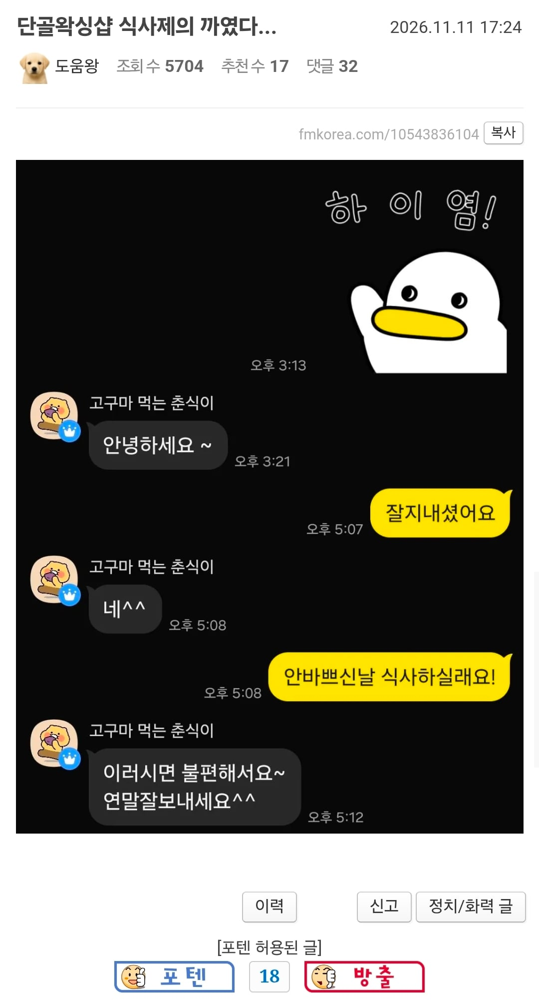

단골왁싱샵 식사제의 까인 펨붕이
댓글
너 고소

자작추
쓰니 위로추
너 어떻게 생긴거야
왁싱샵이면 꼬추도 봤을텐데 작은가?
거절멘트 시원한 거 보면 이미 살짝 낌새 느끼고 있었던 것 같은데 ㅋㅋ
왁싱샵에 저러는새끼 한둘아니라 이미 멘트 준비해놨을 가능성이 높을듯
자작추
뭔짓이람
하이염 ㅋㅋㅋㅋㅋ
뭐 남편이 있거나 그럴수도있지 ㅋㅋㅋㅋㅋㅋ
아니면 남자친구가 있을수도있고 굳이 밝히진 않겠지만ㅋㅋㅋㅋㅋㅋㅋㅋ
그거보단 식사 제의한 쪽 와꾸가 자연산 콘돔이 아니였을까 싶음
결과를 봐서 그런가 처음의 저 이모티콘 하이염도 가망없어보이네
네^^ 에서 끝냈어야함
잇쇼니 사케노무?
히익 칙쇼!
저근가?
왁싱샵이면 얼굴 뿐 아니라 몸도 빻았나보네, 힘내라 개붕아. 자작은 늘 추천이야
서비스업하는 여자들은 껄떡대는새끼들 존나많아서 낌새 보이면 바로 거리두고 안읽씹 ㅈㄴ하더라
샾이 친절한건 원장이 존나 갈궈서 친절안하면 잡아죽이려 들어서 어쩔수없이 막 말동무하면서 나긋나긋한거니 제발 커피 사오거나 밥먹자거나 하지마라
고추가 작으신가요
너가 누군가를좋아하는게
누군가를 불편하게만들었구나...ㅜㅜ
춘식아 내가 너 사랑하면 안되냐?

펨코에 직접 쓴 뒤 캡쳐해서 퍼온다(메모)
이제 누가 왁싱해주냐
ㅋㅋㅋㅋ
얼굴 진짜 개빻았나보네 ㅋㅋㅋㅋㅋ

병신 이걸 또 올리고 자빠졌네
아래가 미니어처라 그런거 아님?
마음에 들면 먼저 연락온다 주접떨지말자
ㅈㅈㅊ